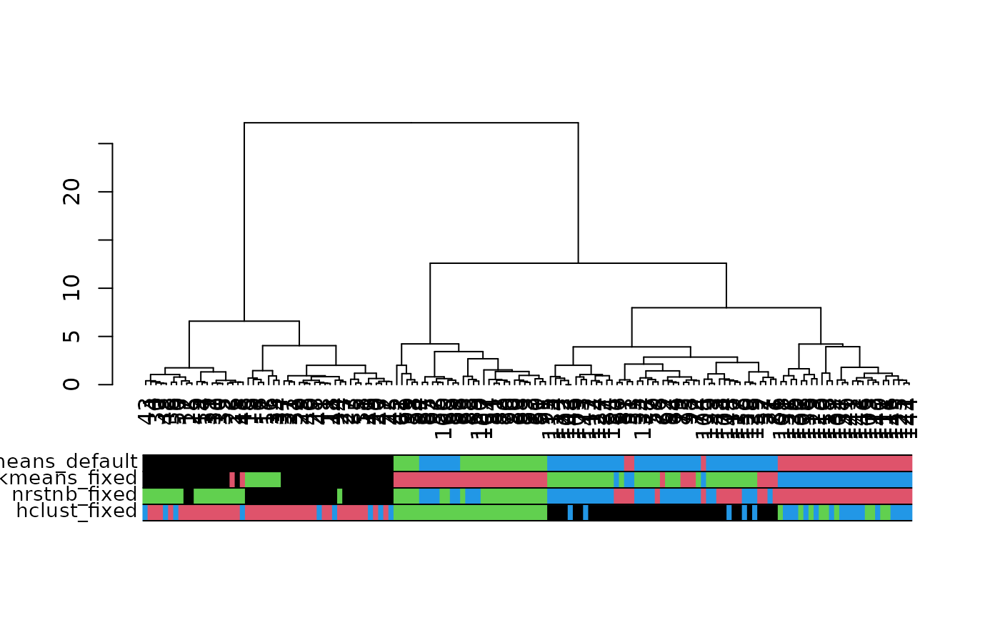
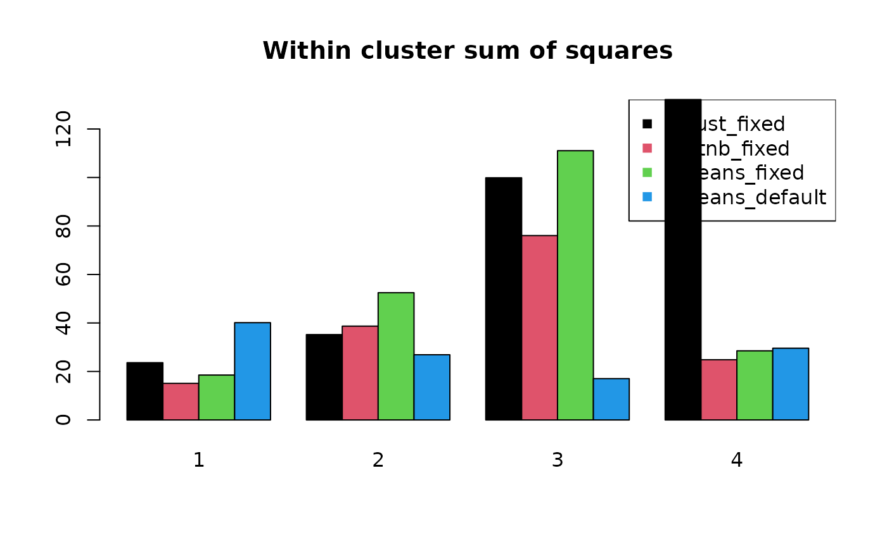
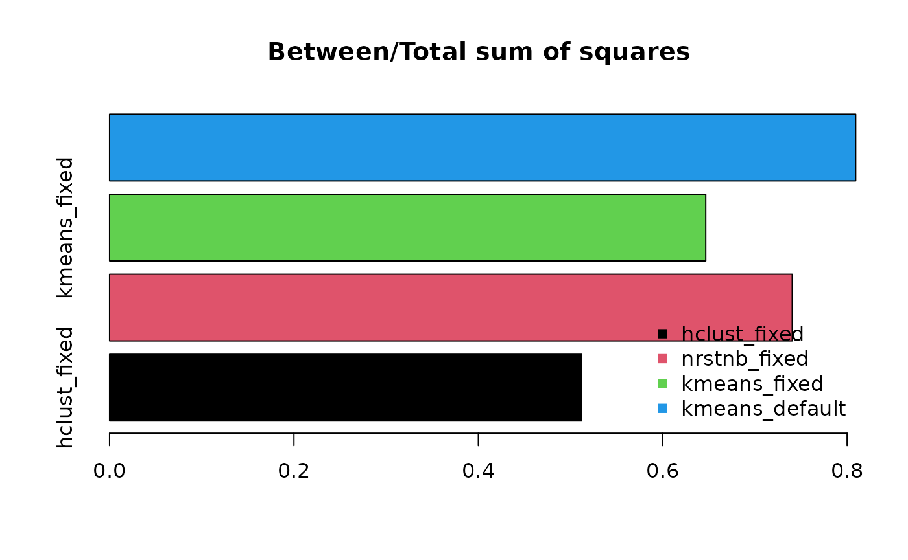

Fixed size clustering
In general clustering algorithms minimize/maximize some metric in a cluster ignoring its size. In rare circumstance the size of the clusters has to be similar or fixed. Here we demonstrate modified cluster algorithms to support fixed sized clusters.
clustering
Here we run three different restricted clustering alogrithms against
the classical partitioning algorithm kmeans.
set.seed(123)
cluster_size <- 40
hcf <- fixed_size_clustering_hclust(dst, size = cluster_size)
nnf<- fixed_size_clustering_nearest_neighbor(dst, size = cluster_size)
kmf <- fixed_size_clustering_kmeans(mtx, size = cluster_size)
kmd <- kmeans(mtx, centers = ceiling(nrow(mtx) / cluster_size))Plot dendrogram
library("dendextend")
dend <- as.dendrogram(hclust(dst, method = "ward.D2"))
cluster_ids <- cbind(
"hclust_fixed" = hcf,
"nrstnb_fixed" = nnf,
"kmeans_fixed" = kmf,
"kmeans_default" = kmd$cluster
)
par(mar = c(8, 4, 4, 2) + .1)
plot(dend)
colored_bars(cluster_ids, dend)
Clustering performance
wss <- sapply(
list(hcf, nnf, kmf, kmd$cluster), within_cluster_sum_of_squares, x = mtx
)
tss <- total_sum_of_squares(mtx)
colnames(wss) <- colnames(cluster_ids)
col <- seq_len(ncol(wss))
barplot(
t(wss), col = col, beside = TRUE,
main = "Within cluster sum of squares"
)
legend("topright", legend = colnames(wss), col = col, pch = 15)
barplot(
1 - colSums(wss) / tss, col = col, horiz = TRUE,
main = "Between/Total sum of squares"
)
legend(
"bottomright",
legend = colnames(wss),
col = col, pch = 15,
bty = "n"
)
Session Information
## R version 4.4.1 (2024-06-14)
## Platform: x86_64-pc-linux-gnu
## Running under: Ubuntu 22.04.4 LTS
##
## Matrix products: default
## BLAS: /usr/lib/x86_64-linux-gnu/openblas-pthread/libblas.so.3
## LAPACK: /usr/lib/x86_64-linux-gnu/openblas-pthread/libopenblasp-r0.3.20.so; LAPACK version 3.10.0
##
## locale:
## [1] LC_CTYPE=C.UTF-8 LC_NUMERIC=C LC_TIME=C.UTF-8
## [4] LC_COLLATE=C.UTF-8 LC_MONETARY=C.UTF-8 LC_MESSAGES=C.UTF-8
## [7] LC_PAPER=C.UTF-8 LC_NAME=C LC_ADDRESS=C
## [10] LC_TELEPHONE=C LC_MEASUREMENT=C.UTF-8 LC_IDENTIFICATION=C
##
## time zone: UTC
## tzcode source: system (glibc)
##
## attached base packages:
## [1] stats graphics grDevices utils datasets methods base
##
## other attached packages:
## [1] dendextend_1.17.1 minair_0.0.5
##
## loaded via a namespace (and not attached):
## [1] gtable_0.3.5 jsonlite_1.8.8 compiler_4.4.1 highr_0.11
## [5] gridExtra_2.3 jquerylib_0.1.4 systemfonts_1.1.0 scales_1.3.0
## [9] textshaping_0.4.0 yaml_2.3.10 fastmap_1.2.0 ggplot2_3.5.1
## [13] R6_2.5.1 knitr_1.48 viridis_0.6.5 tibble_3.2.1
## [17] desc_1.4.3 munsell_0.5.1 rprojroot_2.0.4 bslib_0.8.0
## [21] pillar_1.9.0 rlang_1.1.4 utf8_1.2.4 cachem_1.1.0
## [25] xfun_0.47 fs_1.6.4 sass_0.4.9 viridisLite_0.4.2
## [29] cli_3.6.3 pkgdown_2.1.0 magrittr_2.0.3 digest_0.6.37
## [33] grid_4.4.1 lifecycle_1.0.4 vctrs_0.6.5 evaluate_0.24.0
## [37] glue_1.7.0 ragg_1.3.2 fansi_1.0.6 colorspace_2.1-1
## [41] rmarkdown_2.28 tools_4.4.1 pkgconfig_2.0.3 htmltools_0.5.8.1